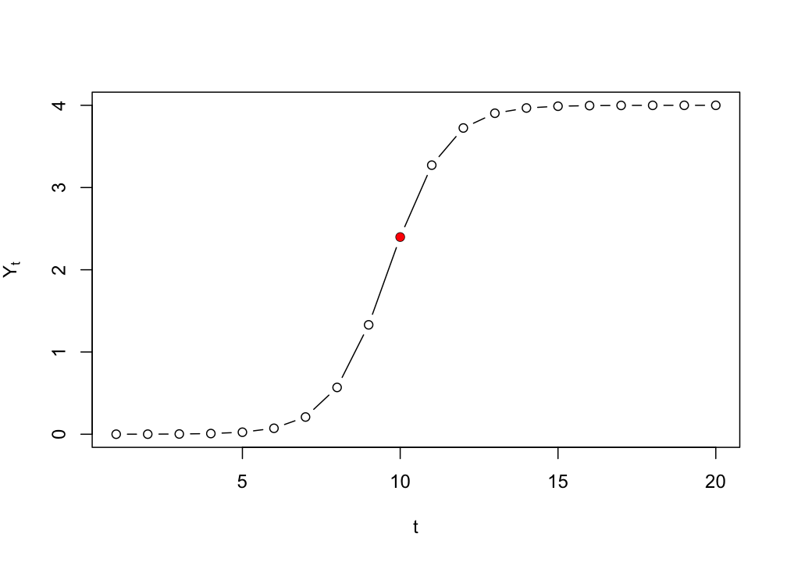
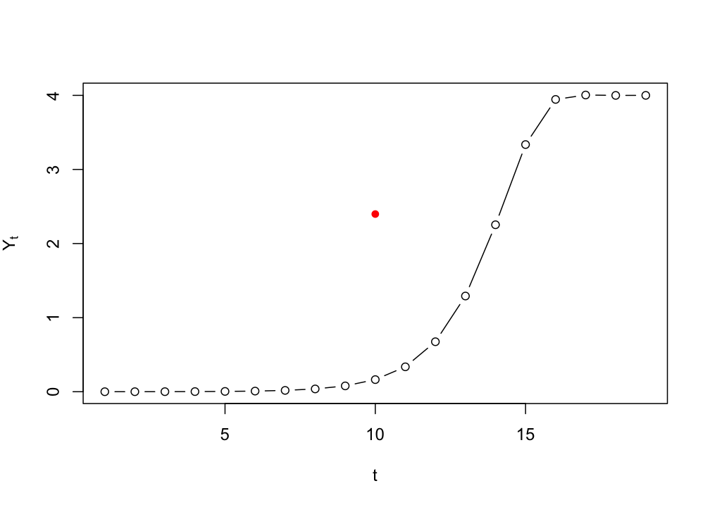
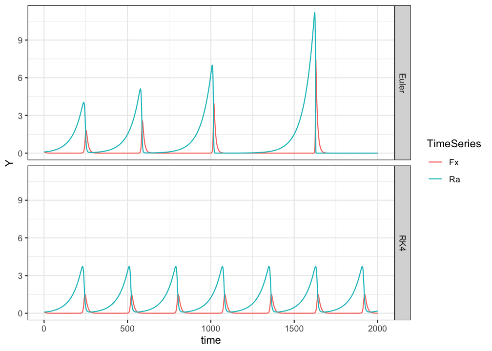
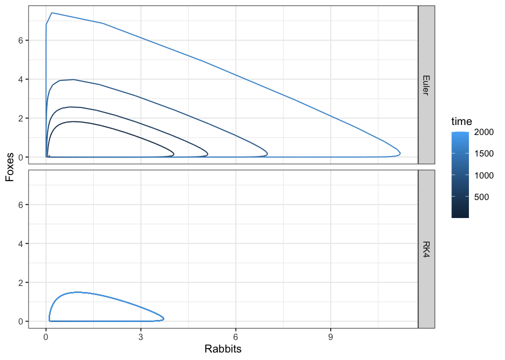

3.4 Numerical integration to simulate continuous time
In order to ‘solve’ a differential equation for continuous time using a method of numerical integration, one could code it like in the spreadsheet assignment below. For R and Matlab there are so-called solvers available, functions that will do the integration for you. For R look at the Examples in package deSolve.
Euler’s method and more…
The result of applying a method of numerical integration is called a numerical solution of the differential equation. The analytical solution is the equation which will give you a value of \(Y\) for any point in time, given an initial value \(Y_0\). Systems which have an analytical solution can be used to test the accuracy of numerical solutions.
Analytical solution
Remember that the analytical solution for the logistic equation is:
\[ Y(t) = \frac{K * Y_0}{Y_0 + \left(K - Y_0 \right) * e^{-r*t} } \] This can be ‘simplified’ to
\[ Y(t) = \frac{K}{1 + \left(\frac{K}{Y_0-1} \right) * e^{-r*t} } \]
If we want to know the growth level \(Y_t\) at \(t=10\), with \(Y_0=.0001\), \(r=1.1\) and \(K=4\), we can just fill it in:
# Define a function for the solution
logSol <- function(Y0, r, K, t){K/(1+(K/Y0-1)*exp(-r*t))}
# Call the function
logSol(Y0=.0001, r=1.1, K=4, t=10)> [1] 2.398008We can pass a vector of time points to create the exact solution, the same we would get if we were to iterate the differential/difference equation.
# Plot from t=1 to t=100
plot(logSol(Y0=.0001, r=1.1, K=4, t=seq(1,20)), type = "b",
ylab = expression(Y[t]), xlab = "t")
# Plot t=10 in red
points(10,logSol(Y0=.0001, r=1.1, K=4, t=10), col="red", pch=16)
Numerical solution (discrete)
If we would iterate the differential equation …
\[ \frac{dY}{dt} = Y_t * (1 + r - r * \frac{Y_t}{K}) \]
… as if it were a difference equation, we are not simulating continuous time, but a discrete time version of the model:
\[ Y_{i+1} = Y_i * (1 + r - r * \frac{Y_i}{K}) \]
logIter <- function(Y0,r,K,t){
N <- length(t)
Y <- as.numeric(c(Y0, rep(NA,N-2)))
sapply(seq_along(Y), function(t){ Y[[t+1]] <<- Y[t] * (1 + r - r * Y[t] / K)})
}
# Plot from t=1 to t=100
plot(logIter(Y0=.0001, r=1.1, K=4, t=seq(1,20)), type = "b",
ylab = expression(Y[t]), xlab = "t")
# Plot t=10 in red
points(10,logSol(Y0=.0001, r=1.1, K=4, t=10), col="red", pch=16)
3.4.1 Euler vs. Runge-Kutta
The method developped by Runge and Kutta takes a harmonic mean over a number of points, R-K4 takes 4 points, R-K6 takes 6, but there are many more variants.
Here’s an exampkle with Predator-Prey dynamics comparing Euler’s method to R-K4.
library(plyr)
library(tidyverse)
library(lattice)
# Lotka-Volterra Euler
lvEuler <- function(R0,F0,N,a,b,c,d,h){
# Init vector
Ra <- as.numeric(c(R0, rep(NA,N-1)))
Fx <- as.numeric(c(F0, rep(NA,N-1)))
for(t in 1:N){
# Euler numerical solution of the predator-prey model
Ra[t+1] <- Ra[t] + (a - b * Fx[t]) * Ra[t] * h
Fx[t+1] <- Fx[t] + (c * Ra[t] - d) * Fx[t] * h
}
return(data.frame(time=1:NROW(Ra),Ra=Ra,Fx=Fx,method="Euler"))
}
# Lotka-Volterra Runge Kutta 4
lvRK4 <- function(R0,F0,N,a,b,c,d,h){
# Init vector
Ra <- as.numeric(c(R0, rep(NA,N-1)))
Fx <- as.numeric(c(F0, rep(NA,N-1)))
for(t in 1:N){
# RK4 numerical solution of the predator-prey model
k1_R=(a - b * Fx[t]) * Ra[t]
k1_F=(c * Ra[t] - d) * Fx[t]
k2_R=(a - b * (Fx[t]+h*k1_F/2)) * (Ra[t]+h*k1_R/2)
k2_F=(c * (Ra[t]+h*k1_R/2) - d) * (Fx[t]+h*k1_F/2)
k3_R=(a - b * (Fx[t]+h*k2_F/2)) * (Ra[t]+h*k2_R/2)
k3_F=(c * (Ra[t]+h*k2_R/2) - d) * (Fx[t]+h*k2_F/2)
k4_R=(a - b * (Fx[t]+h*k3_F)) * (Ra[t]+h*k3_R)
k4_F=(c * (Ra[t]+h*k3_R) - d) * (Fx[t]+h*k3_F)
# Iterative process
Ra[t+1] <- Ra[t] + (1/6)*h*(k1_R+2*k2_R+2*k3_R+k4_R)
Fx[t+1] <- Fx[t] + (1/6)*h*(k1_F+2*k2_F+2*k3_F+k4_F)
}
return(data.frame(time=1:NROW(Ra),Ra=Ra,Fx=Fx,method="RK4"))
}Now that we have the fuctions, we’ll plot the numerical solutions for the same set of parameters. The continuous mathematics (= if you do some calculations to find the fixed points of the system) ensure us that the system should be in an equilibrium state in which the populations keep going around in the same cycle of growth and collapse. Let’s see what happens…
# Parameters
N <- 2000
# Equilibrium
a <- 1/6
b <- 4/3
c <- d <- 1
R0 <- F0 <- 0.1
# Time constant
h <- 0.1
# Get the results
pp1 <- lvEuler(R0,F0,N,a,b,c,d,h)
pp2 <- lvRK4(R0,F0,N,a,b,c,d,h)
# Make a long dataframe
pp <- rbind(pp1,pp2)
pp.long <- pp %>%
gather(key = TimeSeries, value = Y, -c("time","method"))
# Time series plots
ggplot(pp.long, aes(x=time,y=Y,colour=TimeSeries)) +
geom_line() +
facet_grid(method~.) +
theme_bw()
# Phase plane plots
ggplot(pp, aes(x=Ra,y=Fx,colour=time)) +
geom_path() +
facet_grid(method~.) +
xlab("Rabbits") + ylab("Foxes") +
theme_bw()
Using the Euler method predator and prey populations do not ‘die out,’ but in phase space they seem to occupy different behavioural regimes. This looks like an unstable periodic orbit, or an unstable limit cycle, but it is in fact caused by the inaccuarcy of Euler’s method. Here RK4 clearly outperforms Euler.